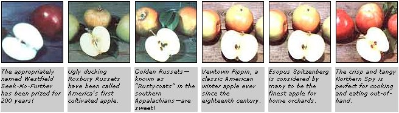

Now's the time to plan ahead . . . for this fall's tree-planting season, and for your family's future pleasure.
Most folks-at the very mention of apples-can conjure up a mouthwatering memory of the crisp snap of the fruit's skin, and the first tastebud-thrilling spurt of tart-sweet juice. Unfortunately, though, a trip to the local supermarket, to satisfy the craving brought about by such fantasies, is usually doomed to end in disappointment. More often than not, the store will have only two or three varieties on hand: Red Delicious (which are usually mealy) . . . Golden Delicious (often tasting downright insipid) ... and occasionally some long-stored McIntosh (that are better fit for throwing than they are for eating). There's not a fruit among them that would serve to tempt Adam!
Apples are a product now, you see, and they're selected and engineered-much as commercial tomatoes are-for easier handling and reduced spoilage. Part of the problem is the fault of the customers, of course. Growers have found that some folks will choose a bright and shiny red apple, no matter how nondescript its flavor and texture, over a finer-tasting fruit that's "marred" by harmless brown russeting .. . and what some customers prefer has been assumed to mean "what everybody wants". So now, almost all anyone can buy is pretty, glossy fruit that ships well, stores well . . . and tastes bland.
Well, you don't have to put up with that! Because, as MOTHER has been telling you for years, you can regain control over many aspects of your life . . . from big concerns like energy and shelter to smaller-but equally important to the quality of life-areas such as one's choice of food. Right now you can sit down with a catalog and select home orchard trees from among hundreds of varieties that have been celebrated for fine flavor over the past 100, 200 . . . even 300 years. And you can plant such fine trees (now often available as "dwarfs") in a minimum of space . . . begin picking fruit after two or three years . . . and enjoy annual harvests of real apples for the rest of your life.
It's possible to grow Ben Franklin's favorite variety (the Newtown Pippin) ... raise the French dessert apple relished by King Louis XIII in 1627 ( CalvilleBlanc d'Hiver ) ... or harvest the same taste treats that Thomas Jefferson gathered back in 1790 ( EsopusSpitzenberg ).
The availability of classic apple varieties which grow on dwarf and semidwarf trees has made the "antique" home orchard a practical reality. A series of dwarfing rootstocks-which will determine the ultimate size of the tree-can produce "bushes" that range from half of normal height (an average of eight feet, on dwarf Mailing IX stock) through three-quarters normal (with Mailing VII or Mailing Merton 106 stock). Since dwarfs and semidwarfs can be planted on 12- to 20-foot centers (as opposed to the 40-foot spacing required for full-sized trees), it's possible to grow as many as nine trees in the space required by one nondwarfed apple.
Of course, dwarf trees don't bear tiny apples: The fruit is of standard size ... or sometimes even bigger, since less of the tree's energy is put into vegetative growth. Another benefit is that the midget varieties bear earlier than do their larger kin, with good crops beginning to appear within two or three years instead of after 5 to 15!
While the rootstock establishes the size of the tree, it's the grafted scionwood-or budstock-that determines the variety of apple that the tree will bear. And when you raise your own apples, you're not just limited to three or four "supermarket specials". One grower-Southmeadow Fruit Gardens offers over 150 kinds of trees . . . while scions and budstock for a great number of varieties are also available to the do-it-yourself tree-grafter . . . and even some of the commercial orchards sell a dozen or two antique varieties.
Since there are so many different kinds of apples available, there's room here to mention only a few. (Anyone seriously interested in growing antique apples should invest $6.00 in the encyclopedic 112-page illustrated catalog published by South-meadow. Dept. TMEN, 2363 Tilbury Place, Birmingham, Michigan 48009.)
There are some old varieties that simply can't be overlooked, though. Ben Franklin's favorite Newtown Pippin (also known as Albemarle Pippin or YellowNewtown ), for example, is just about the best eating apple to be found. The Newtown is a large, bright green fruit with fine, crisp flesh and a wonderfully tart-sweet flavor. It's also one of the best storage apples around . . . and the flavor keeps improving right into March or April! Newtowns are grown commercially only in Oregon and northern California, so you'll likely have to raise them yourself if you want to sample the classic treats.
Folks in chilly climes should be sure to try Northern Spy, a large red apple that s as excellent for cooking as it is for eating out-of-hand. It's slow to fruit-full-sized trees can take up to 14 years, while dwarfs require three to four-but the wait is well worthwhile: Many experts consider the Spy to be the best American apple.
Another "must try" variety is Thomas Jefferson's choice: EsopusSpitzenberg. The fruit is conical, yellow to orange-red. and marked with yellowish-grey spots . . . and the delicious lightamber flesh is crisp and highly aromatic. Like the Spy. the Spitzenberg is equally good for cooking or eating fresh.
Two "ugly duckling" (at least by modern" standards) apples that rate high are Golden Russet and Roxbury Russet. Both exhibit the russet's characteristic rough. mottled skin . . . but beneath the plain ex terior, the apples are delicious. The Golden has crisp, yellowish flesh and a sugary juice, while the Roxbury-which dates from the early seventeenth century and may be one of America's first cultivated apples-has a sprightly tart-sweet flavor and is second only to the Newtown Pippin as a storage variety.
The list could go on and on: There's the sheer beauty of the red-blushed yellow Winter Banana. . . the wonderful flavor and impressive vitamin C content (even higher than oranges) of Calville Blanc d'Hiver. . . the crisp texture and classic taste of Ribston Pippin . . . the charm (and superb flavor) of Cornish Gilliflower. . . and the aliround quality of the appropriately named Westfield Seek-No-Further.
The only problem with such old varieties is finding them: Since they're not grown for commercial sale, not all nurseries stock the trees . . . and quantities-in those firms that do keep them on hand -are usually very limited. So right now, while the bees buzz hungrily among the fragrant apple blossoms, is the time to order your trees for fall planting (in Plant Hardiness Zones 6 to 8) and to reserve saplings for setting out next spring (if you live in the north country). Here's a list of reliable suppliers:
Baum's Nursery
Dept. TMEN
RD2
New Fairfield, Connecticut 06810
(price list free, fruit varieties book $2.00)
Bountiful Ridge Nursery
Dept. TMEN
Princess Anne, Maryland 48009
C & O Nursery Dept. TMEN
1700 North Wenatchee Avenue
Wenatchee, Washington 98801
Lawson's Nursery
Dept. TMEN
Route 1, Box 294
Ball Ground, Georgia 30107
Henry Leuthardt Nursery
Dept. TMEN
East Moriches, New York 11940
(price list and handbook $1.00)
J.E. Miller Nurseries
Dept. TMEN
Canandaigua, New York 14424
New York State Fruit TestingAssociation
Dept. TMEN
Geneva, New York 14456
Southmeadow Fruit Gardens
Dept. TMEN
2363 Tilbury Place
Birmingham, Michigan 48009 (price list free, illustrated catalog $6.00 . . . also a source for dwarfing rootstock)
Stark Bro's Nurseries
Dept. TMEN
Louisiana, Missouri 63353
Worcester County Horticultural Society
Dept. TMEN
30 Elm Street
Worcester, Massachusetts 01608 (send a long SASE for a list of scions and budstock for grafting)
(A Plant Hardiness Zone Map can be ordered-for $1.00-from the Superintendent of Documents, U.S. Government Printing Office, Washington, D.C. 20402. Ask for USDA Miscellaneous Publication No. 814.)
PLANTING AND PRUNING
In that part of the country within USDA Zones 6 to 8, you can plant apple trees either in the early spring (before they leaf out) or in the late fall (after they've gone dormant). North of Zone 6, however, apple planting is pretty much limited to springtime . . . since the bitter winter weather in such areas would kill newly planted trees. (Most apples do poorly in the very warm Zones 9 and 10: There just isn't enough winter chilling to satisfy the plants' dormancy needs.)
There are only a few rules to be followed in planting, but they are important and should be observed closely. First, it's essential that the roots never dry out: Keep the tree out of the sun and wind, and make sure the roots are damp until they're safely underground. Next, dig a big hole . . . at least twice as wide and deep as the natural spread of the roots. (Of course, the graft between the rootstock and the scionwood must be above the ground: Otherwise the scion will send down its own roots, and the dwarfing action of the rootstock will be defeat ed.) Pack topsoil firmly around the roots, and trickle a bucket of water around the trunk after the hole is filled in. If you're planting a tree on Malling IX rootstock, it's going to need support, so drive a stake in now . . . and be sure to place a hardware cloth collar around the base of all trees to fend off hungry mice and rabbits.
Freshly planted apple trees should be pruned in order to compensate for the loss of feeder roots during transplanting. If you're growing one-yearold whips, simply cut the aboveground portion of the stem back about a third. Branched trees ought to be pruned to four or five strong branches . . . and then even these stems should be cut back to 3/4 their original length.
In future years, it's best to follow the recommendations of a good pruning manual: One that we've used is Pruning Simplified by Lewis Hill (Rodale Press, 1979), available from many bookstores or-for $10.95 plus 95 cents shipping and handling-from Mother's Bookshelf, P.O. Box 70, Hendersonville, North Carolina 28791.
|
 PHOTOS BY PARIS TRAIL |
|
|